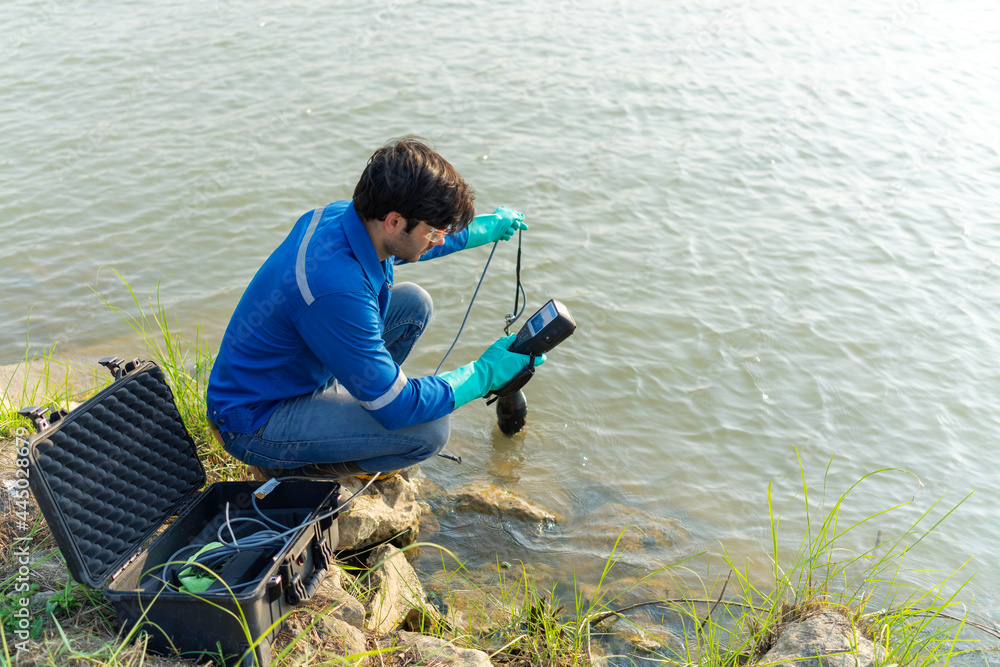
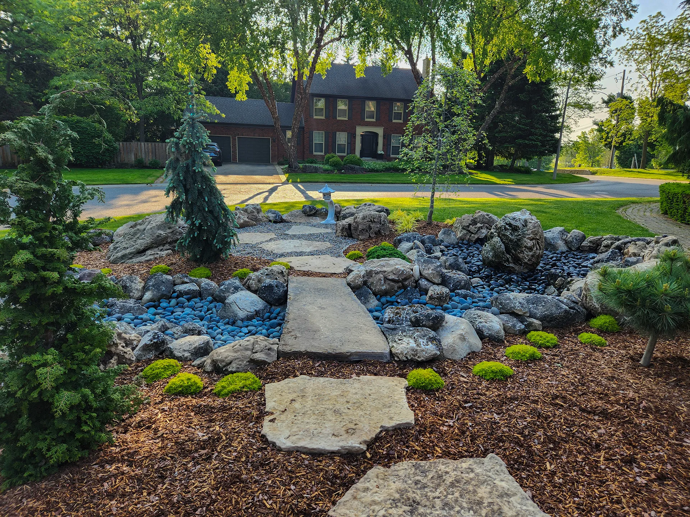
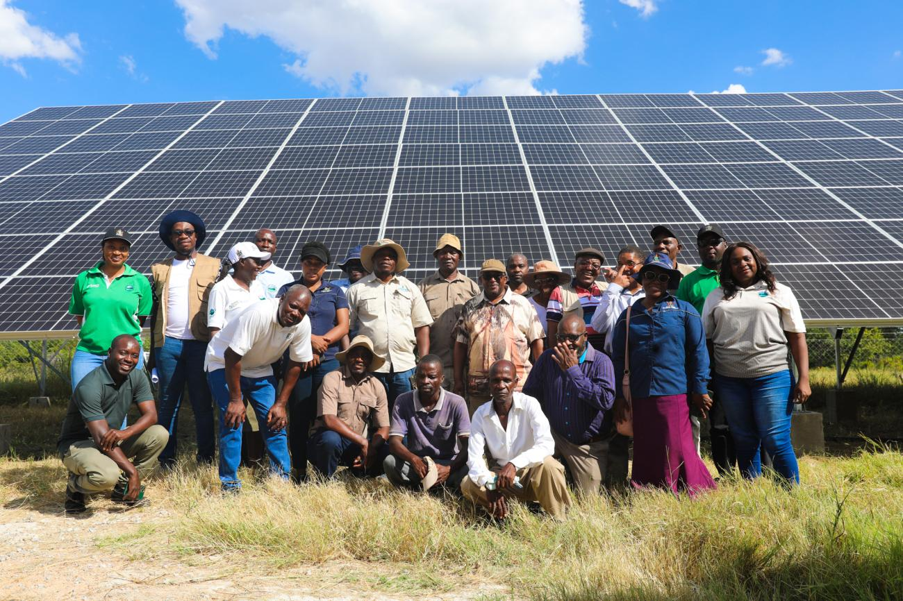
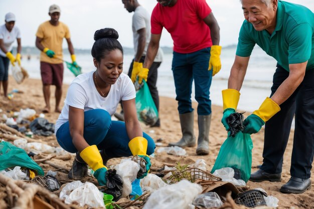
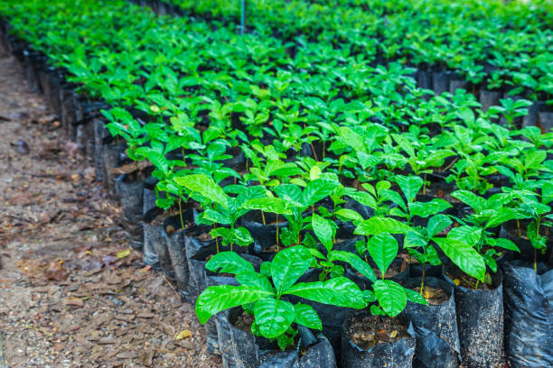
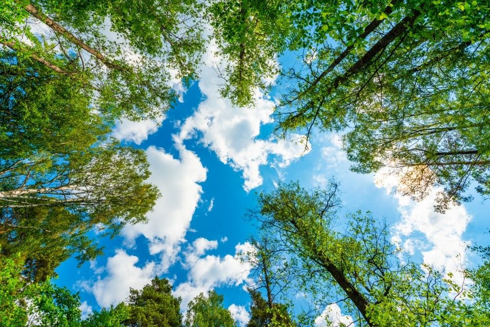

Water Monitoring
Smart Water Watch
Community water stewards use affordable test kits and smart sensors to monitor turbidity, pH, and contamination risks.

EcoSense Africa projects connect monitoring, education, restoration, recycling, and clean energy into a practical environmental action portfolio.
Each initiative documents its location, current status, and environmental impact focus.

Community water stewards use affordable test kits and smart sensors to monitor turbidity, pH, and contamination risks.
Schools receive eco club toolkits, recycling systems, tree nurseries, and climate literacy resources.

Solar installations support evening study centers, clinic lighting, and small enterprise charging hubs.

Beach communities organize waste sorting stations, cleanup days, and plastic reduction campaigns.

Tree planting teams map seedlings, track survival, and train caretakers to protect restored sites.

Portable air quality monitoring supports school awareness, traffic advocacy, and community health conversations.